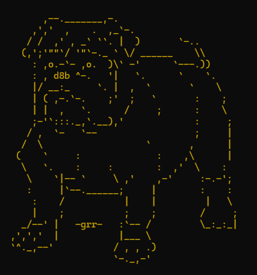

Projets scolaires
Knights-Arena
Intitulé : Knights-Arena : Jeu algorithmique de combat par Pierre-Feuille-Ciseaux.
Contexte et durée : Ce projet a été réalisé dans un cadre scolaire, durant ma première année de BUT Informatique. Il s’est déroulé sur une période d’un mois, avec environ 40 heures de travail en binôme.
Objectifs : L’objectif principal était de concevoir un jeu dans lequel un chevalier affronte des monstres selon les règles de Pierre-Feuille-Ciseaux. Le projet visait à comparer différentes approches algorithmiques tout en répondant à des contraintes techniques telles que : l’optimisation des performances, la gestion et la structuration des données, la mise en place d’un système de sauvegarde des parties.
Travail réalisé : Le projet a été mené à deux et s’est articulé autour du développement, de l’expérimentation et de l’analyse d’algorithmes. Pour ma part, j’ai principalement contribué à : la gestion des entités “chevaliers”, la sauvegarde des données de jeu, l’optimisation des opérations de tri et de recherche dans les structures de données.
Résultat : Le projet a abouti à un jeu fonctionnel, avec une image officielle choisie pour représenter l’univers de Knights-Arena. Cette expérience m’a permis de renforcer mes compétences en algorithmique, en manipulation de structures dynamiques, et en optimisation des performances dans un contexte applicatif.
Lien vers le projet : Knights-Arena

Gestion de stages
Intitulé : Application de gestion des stages en BUT Informatique.
Contexte et durée : Ce projet a été réalisé en première année de BUT Informatique. Il a été développé en binôme sur une durée d’environ 30 heures.
Objectifs : L’objectif du projet était de concevoir une application permettant de gérer les différentes étapes liées aux stages : réception et gestion des offres, suivi des candidatures, affectation automatique des stages, évaluation des étudiants en fin d’année. Le tout en assurant une gestion rigoureuse des données.
Travail réalisé : Le travail a consisté à comprendre et structurer les données, développer l'application, puis effectuer des tests fonctionnels. Mes contributions ont porté sur : la gestion des fichiers, l’implémentation du système de candidatures, l’optimisation des algorithmes de tri et de recherche.
Résultat : Le projet a permis de créer une application fonctionnelle, répondant aux besoins d’un suivi complet des stages. Cette expérience m’a permis de consolider mes compétences en algorithmique, en gestion de fichiers et en manipulation des données en langage C.
Lien vers le projet : Gestion_de_stages
Projets personnels
Le jeu de la pastèque
Intitulé : Reproduction du jeu “Suika Game” en Python.
Contexte et durée : Ce projet personnel a été réalisé de manière autonome durant mon temps libre l’année dernière. Il s’inscrit dans une démarche d’apprentissage autodidacte, sans contrainte de durée précise.
Objectifs : L’objectif était de recréer un jeu basé sur le principe du “Suika Game”, dans le but de : découvrir de nouvelles bibliothèques Python, apprendre à créer une interface graphique, expérimenter la programmation ludique et visuelle.
Travail réalisé : Le développement du jeu a nécessité : de nombreuses recherches et lectures de documentation technique, l’exploration de bibliothèques Python dédiées à l’interface graphique, la mise en œuvre d’une logique de jeu et d’interactions utilisateur. J’ai dû faire preuve de curiosité, d’autonomie et de persévérance pour mener ce projet à terme.
Résultat : Bien que le jeu reste simple, il fonctionne et reflète concrètement mes compétences acquises. Ce projet m’a initié à la création d’interfaces graphiques et m’a permis de prendre conscience de l’impact concret de mes connaissances en programmation.
Lien vers le projet : jeu_de_la_pasteque
Mon parrot.live
Intitulé : Reproduction de l’animation “curl parrot.live” en Python et Web.
Contexte et durée : Ce projet personnel est né de ma curiosité pour comprendre le fonctionnement de l’animation affichée via la commande curl parrot.live. Réalisé en autonomie sur mon temps libre, il m’a permis d’explorer deux approches de développement : en Python, puis en technologies web (HTML, CSS, JavaScript).
Objectifs : L’objectif principal était de : comprendre le mécanisme derrière une animation en ligne accessible via curl, reproduire ce type d’animation par mes propres moyens, apprendre à diffuser un projet en ligne via un serveur accessible en ligne de commande.
Travail réalisé : Pour mener à bien ce projet, j’ai effectué : une phase de recherche sur le fonctionnement des animations en terminal, un premier développement de l’animation en Python, une deuxième version en HTML, CSS et JavaScript pour la rendre accessible en ligne, la mise en ligne du projet sur une plateforme d’hébergement disponible via la commande "curl https://monparrot-live.onrender.com/". Des variations de couleurs ont également été ajoutées pour enrichir l’animation.
Résultat : Le projet est aujourd’hui accessible en ligne et fonctionnel. Il permet de reproduire une animation dynamique dans un terminal via curl. Le seul inconvénient actuel est le délai d’attente (environ une minute) au démarrage du serveur. Ce projet m’a permis de combiner développement backend, frontend et déploiement web, tout en approfondissant ma compréhension des requêtes HTTP et des environnements d’exécution.
Lien vers le projet : monparrot.live
